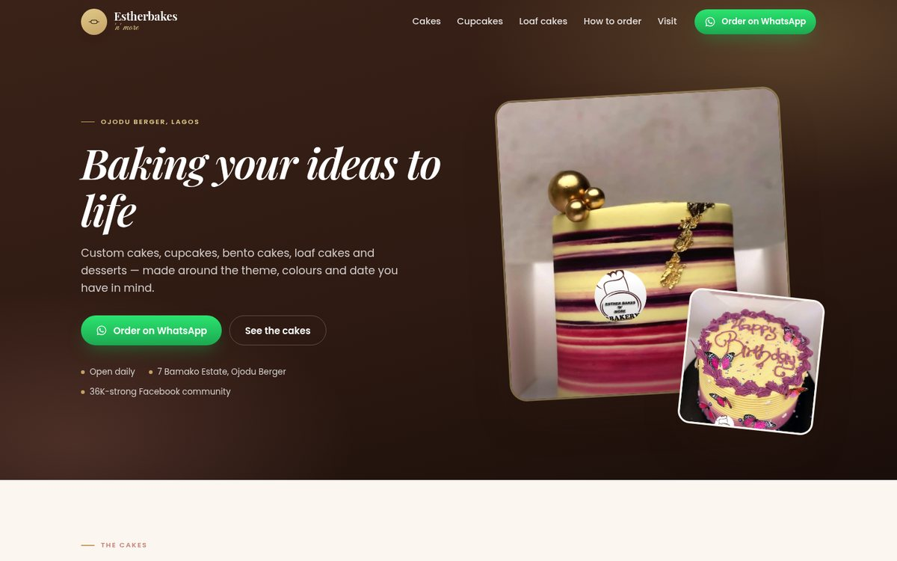

Website mock-up
Estherbakes'n'more
Estherbakes'n'more is a bakery in Bamako Estate, Ojodu Berger, Lagos. The baker's tagline is "Baking your ideas to life". I built a one-page mock-up that uses her own cake photographs so customers can see the work, find the shop and order on WhatsApp.
The layout keeps the cakes at the centre of the page and makes the next step — sending a WhatsApp order — obvious on both a phone and a desktop screen.

Tools used
- HTML
- CSS
- Layout with Flexbox and CSS Grid